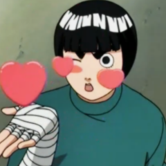

Gran ninja dominante del Taijutsu.
Educación
- Graduado de Genin en la Academia a base de Taijutsu.
- Considerado el ninja más persistente de la historia.
- Examen Chunin.
- Realizó el Examen Chunin con el equipo Guy, a los 15 años se convirtió en Chunin.
- Maestro de Taijutsu.
- Su velocidad y destreza son superiores a las de un ninja más experimentado.

Misiones Completadas
- Rango D: 25
- Rango C: 21
- Rango A: 10
- Rango S: 17
Logros
- - Logró convertirse en genin sólo usando taijutsu.
- - Fue el primero en poder ganarle a Sasuke Uchiha en una pelea antes de que Guy lo detuviera.
- - Logró sobrevivir a la operación que le devolvería las posibilidades de ser un ninja.
- - Abrir un dojo para desafiar a cualquier oponente.
- - Logró convertirse en Chūnin después de dos años y medio de entrenamiento.
- - Abrir 7 de las 8 puertas de Loto en la cuarta película de Naruto, cada una le da una fuerza física descomunal.
- - Logró convertirse en Jōnin.
Otros
- Es muy formal, sensible, educado y respetuoso.
- Gran sensibilidad al licor japones, convirtiendosé en un maestro del boxeo borracho.
- Tiene muchas similitudes con su maestro Might Guy.
- Su frase favorita es:"El trabajo duro vence al talento natural"